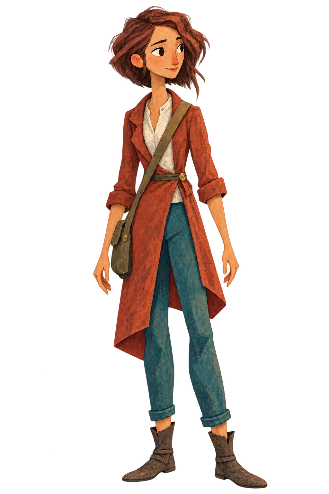

移动刻尺能改变读数，但不一定能修好仪器。两道刻线必须在同一套装置设置下复测。
先看现场。铅垂线始终向下，歪的是木架。
检查榫头后，才能松开被雨水撑紧的接缝、重新支稳木架。
诺伊
“你站在这儿就没有影子了。”她蹲在细线旁，一只鞋搁在台阶上。维卡低头，才发现自己的影子挡住了刻度。
答案之后 / 第三章
工程需要正确的数字。阿伦还想知道，昨天为什么错了。
维卡奉命用核验无误的新本替换阿伦的错误记录：这些争议可能拖延水利工程，让救济粮晚到。诺伊提出先复测一次。昨夜下了雨，这是他们争取到的第二天；局里允许采用达到同样风险目标的替代方案。

移动刻尺能改变读数，但不一定能修好仪器。两道刻线必须在同一套装置设置下复测。
先看现场。铅垂线始终向下，歪的是木架。
检查榫头后，才能松开被雨水撑紧的接缝、重新支稳木架。
“你站在这儿就没有影子了。”她蹲在细线旁，一只鞋搁在台阶上。维卡低头，才发现自己的影子挡住了刻度。
几周后
“你的那本让他们知道该做成什么样。我的这本让人知道木架为什么会歪。”
“所以别拉着我去看下一场日落。”维卡说。她带他去了。
继续第四章 · 那句还没印出来的话 →译文为工作稿，尚待母语审校。